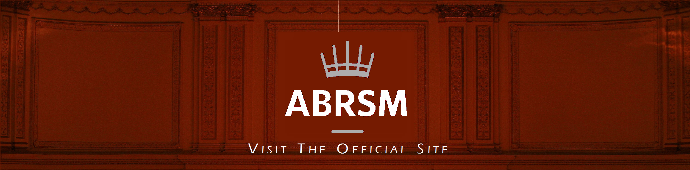
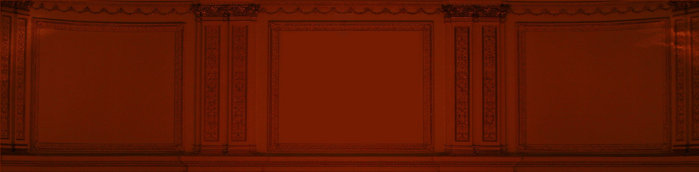

Student Exams
For students who want to learn the piano by following the grade system, Jenny submits students for examinations with the Associated Board of the Royal School of Music (ABRSM) if they wish. This consists of up to 8 graded practical exams and (optional) music theory exams. However, in order to proceed to grade 6 onwards in practical exams, you must pass the grade 5 theory exam.
The exams take 12 minutes, with tests getting longer after grade 4. When a student sits an exam, they are scored out of 150. The test is marked accordingly:
performances (three pieces picked by the ABRSM) (90 marks)
Scales (21 marks)
sight reading (21 marks)
Aural tests (18 marks)
In order to pass, you must score at least 100/150. The boundaries are given in full below:
Pass (100/150)
Merit (120/150)
Distinction (130/150)
Each year, there are three opportunities to enter for exams: the spring term, summer term and autumn term. The next term will be the autumn term. Entrants must send their application and admission fee before Friday September 23. Exams will take place between November 7 and December 10. Since the year 2000, Jenny as had a 99% pass rate with 39 merits and 25 distinctions.